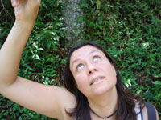

Directed by Andréa Seligmann Silva and Mieke Bal; Netherlands,
2010; 83 min.
Festival Sneak Preview with participation of Mieke Bal!
Regular Admission:$7/ $4 students (free to Carnegie Mellon students and faculty, and students at The University of Pittsburgh, Duquesne University, The Art Institute of Pittsburgh)
Pittsburgh Premier + Reception
Director Mieke Bal scheduled to appear.
This festival is organized by the Humanities Center. Supported by The Graduate Program for Cultural Studies at the University of Pittsburgh, the Heinz Endowments, PNC Bank, the Jewish Film Forum, and a grant from the Pennsylvania Humanities Council.
"So is this my new identity? Am I a 'Brazilian'? Or 'a Latin American living in Europe'? or 'the daughter of a Holocaust survivor'?" –Andréa Seligmann Silva, Director
2010 Best Female Performance Award, São Paulo
2010 Premiered at International Film Festival Rotterdam, Rotterdam, The Netherlands
2011 Exhibited at Universität Graz, Graz, Austria
2010 Exhibited at Warsaw Film Festival, Warsaw, Poland
Andréa, a Brazilian filmmaker living in Amsterdam, begins to explore her and her siblings’ impulse to leave their home country. From hours of conversation, she derives a theme: their mother, who had a psychotic crisis in recent years. Further exploration leads Andréa to explore her mother's immigration to Brazil from Nazi Germany as a three-year-old. This autobiographical film depicts one woman’s search through her own history of movements.
Mieke Bal
combines the practice of filmmaking with her work as an academic. She is a film director as well as Royal Netherlands Academy of Arts and Sciences Professor, based at the University of Amsterdam. Her cinematic work (experimental documentaries and video installations) focuses on migration and migratoriness. Works such as SeparationsState of Suspension, Becoming Vera, and Nothing is Missing are being exhibited worldwide.

Andréa Seligmann
Silva is Brazilian and has been living in Amsterdam since 2000. She has been working in film in São Paulo, New York, and Amsterdam since 1989. She has directed documentaries and short fiction films. As of March 2010, Andréa works as a film restorer for the EYE Film Institute Netherlands.